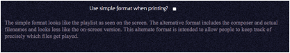
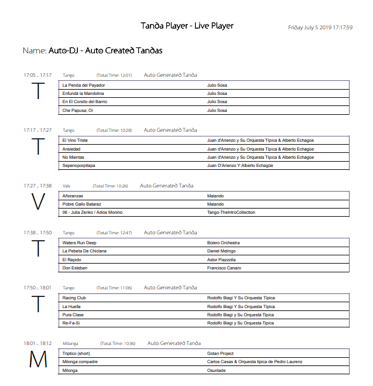
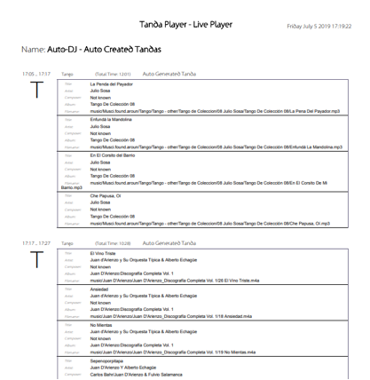

You may wish to keep a record of which songs you have played
at an event or keep track of all your live performances. You might even want to
share the playlist with other DJs or your dancers. To support this, the regular browser’s print feature will print the Play List in a slightly different way to
the main display.
The way the output is laid out is configurable from the setup page.

Ticking the box provides a simple layout:

By not ticking the checkbox the layout is geared toward providing actual track details and the display includes the actual filename along with the album and composer.
